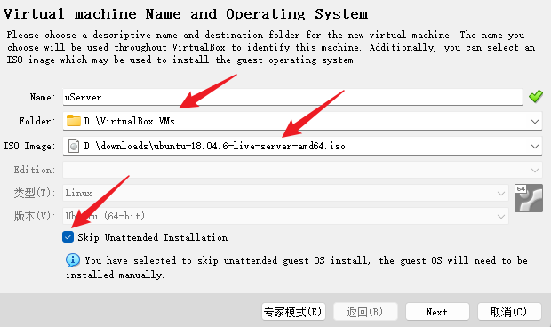
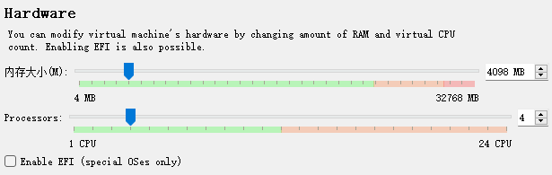
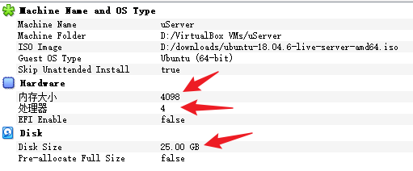
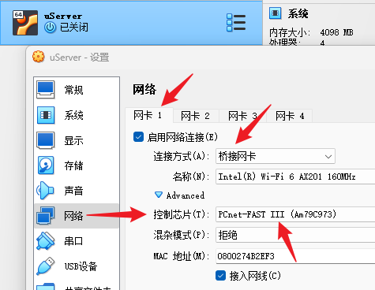
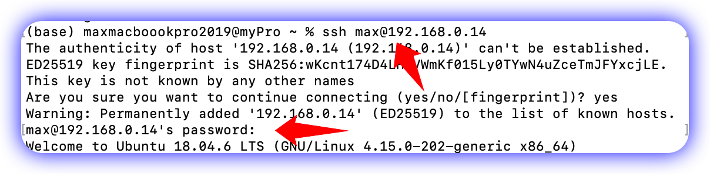

Ubuntu in Virtual Box
Ubuntu服务器版的下载地址
- √下载地址: http://releases.ubuntu.com/22.04/
- 也可以用桌面版本:
安装Ubuntu注意事项
- √不用要Uattended模式. 偏要用的话, 会没有admin的权限.

- √个人用于实验的话, √4核4G就可以了, √硬盘用25G也可以了.



在 MacBook 用 ssh 访问服务器
服务器连接 Wifi
Bash
ip a # 查看网络的名称
sudo su # 获得 root 权限
cd /etc/netplan/ # 进入相关目录
ls # 查看目录下的文件
nano 00-installer-config-wifi.yaml |
Bash
# This is the network config written by 'max'
network:
wifis:
wlp4s0:
dhcp4: no # 不自动分配网址
dhcp6: no
addresses: [192.168.0.244/24] # 设置静态网址
gateway4: 192.168.0.1 # 网关
nameservers: # 域名服务器
addresses: [114.114.114.114, 9.9.9.9, 8.8.8.8]
access-points:
"max_tp_mesh":
password: "gwdkpvgj"
version: 2 # 必须是 version 2 |
Bash
sudo netplan generate
sudo netplan apply |
获得服务器的 ip 地址
√用下图的ssh方式访问

修改文件名:
- sudo mv former_name new_name
修改文件的 owner
- chown owner_name file_name
- sudo chown max 00-installer-config-wifi.yaml
获得root权限
移动文件
查看电量:
- upower --dump | grep --color=never -E "state|to\ full|to\ empty|percentage"
合盖不休眠的设置
- sudo nano /etc/systemd/logind.conf
Bash
# See logind.conf(5) for details.
[Login]
#HandleHibernateKey=hibernate
#HandleLidSwitch=suspend
HandleLidSwitch=ignore
#HandleLidSwitchExternalPower=suspend |
安装 venv
- sudo apt install python3.10-venv -y
创建虚拟环境
Bash
max@ubserver:~$ mkdir envs
max@ubserver:~$ cd envs
max@ubserver:~/envs$ python3 -m venv dj
max@ubserver:~/envs$ ls dj
bin include lib lib64 pyvenv.cfg share
max@ubserver:~/envs$ source /home/max/envs/dj4/bin/activate # 激活虚拟环境
(dj) max@ubserver:~/envs$
pip install -i https://pypi.tuna.tsinghua.edu.cn/simple django # 安装 Django
(dj) max@ubserver:~$ python -m django --version # 查看 Django 版本
3.2.16
(dj) max@ubserver:~$ ls / # 查看根目录
cd ~ # 到用户的 home, 相当于 /home/max |
激活虚拟环境
source /home/max/envs/dj4/bin/activate
重新启动
reboot # 然后要等一分钟才会真正 reboot
退出登录状态:
logout
设置时区
timedatectl set-timezone Asia/Shanghai
date
上传文件夹到服务器
- 开 sftp 窗口: 在终端输入命令: sftp max@192.168.0.xxx
- 上传文件夹: 一定要有 -r (recursive)参数, 目标文件夹是 /home/max/, 不是/home/max
/mysite
Bash
# 上传文件夹:
put -r /Users/maxmacboookpro2019/my_projs/10django_prjs/mysite/ /home/max/ |
从局域网的另一台电脑访问 Django服务器
- √在 setting.py 中设置好 ALLOWED_HOSTS = ['*', 'localhost', '127.0.0.1', '192.168.0.244']
- √把修改好的配置文件上传到服务器
- √启动服务器, 注意绿色的部分--要给定 ip 和端口 :
- (dj4) max@u22:~/mysite$ python manage.py runserver 0.0.0.0:8000